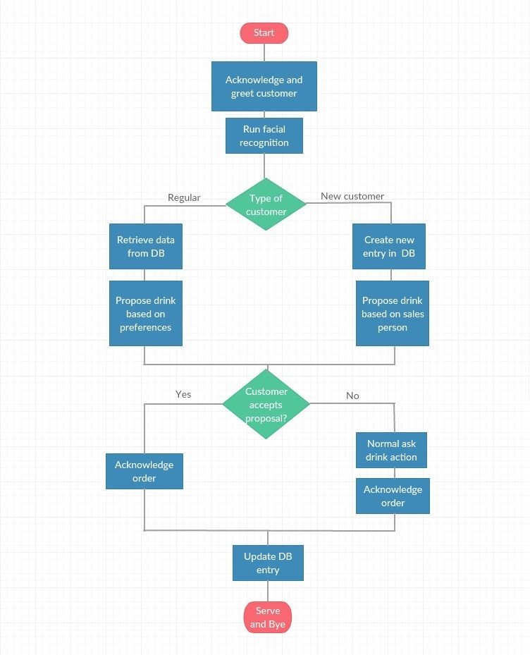

James - Bartender Robot
Role: HCI Research & Design | Team: 4 Members | Duration: 3 months
OVERVIEW
James project is to develop a robot that is capable of interacting with humans in public spaces. In the previous James project, the robots were designed to function as a bartender, which can take orders from people and handout drinks. For more information about the previous project please check the paper via the PDF link.
The Problem
Meeting the social goals and obligations for the bartender as a social robot.
Introduction
As robots become more integrated into our daily lives, they must increasingly deal with situations in which socially appropriate interaction is vital. In such settings, it is not enough for a robot simply to plan its actions to perform particular tasks; instead, the robot must also be able to satisfy social goals and obligations that arise through interactions with people in real-world settings. As a result, a robot requires not only the necessary physical skills to perform tasks in the world, but also the appropriate social skills to understand and respond to the needs and intentions of the people it interacts with.
RESEARCH
Salesperson
‘Nothing happens until someone sells something’ is one of the many old sayings in business. Thus department stores, companies, restaurants, and bars spend a lot of effort on training their salespersons, salesmen, waiters, waitresses, and bartenders to be equipped with certain skills and knowledge, so that they can succeed in making sales and provide desirable customer service. In the book Marketing Principles, the roles of salespeople are “creating value for their firms’ customers, managing relationships, and relaying customer and market information back to their organisations.” (Tanner, Raymond, 2012)
- Creating Value
Creating value means creating solutions to meet the needs of their customers after perceiving them. In this case, salespersons have to understand their products well with certain expertise knowledge in some situations and also be acute in observing to detect the demands of customers precisely. -
Managing relationships
To manage relationships is not just to make and retain customers within the limited time, but also ensure they can close the deal and aim for as many deals as possible in the future. -
Boundary spanners
Sales representatives are described as boundary spanners when explaining the role of gathering information. They usually operate outside the firm and in the field where they can get a great deal of firsthand information about customers’ needs to adjust existing offerings, create new ones, and reformulate their marketing tactics.
Status Giver
As it is discussed in the role as salesperson, maintaining customer relationship is important in service industry. Apart from providing desirable sales experience, giving status sometimes can help in developing consumer relationships. Customers can be generally divided into two categories, new customers and regular customers respectively. Developing new customers into regular ones can help a lot in sales. To do so, some benefits or psychological treatment can be given in order to maintain customers. Relational benefits to regular customers can serve as a barrier from switching to other service providers (Keaveney, 1995). Considering this, to fulfil the status-giving role means that a bartender can recognise customers who visit the bar regularly and their drink preferences. By doing so, a bartender can create a bond with customers, and the customers can feel psychologically rewarded.
Keeper of Order
One of the most important social roles of the bartender is to keep the order in the bar. In places like bars, where people may get drunk and tend to behave more emotionally and aggressively, the environment can be easily turned into chaos if there is no supervision. The presence of a person who is responsible for the venue is crucial, working as a supervisor while serving drinks to avoid any disorder in the place.
Besides, maintaining the maximum desirability of bartender’s service can to some degree prevent quarrels and even violence caused by dissatisfactory service or unequal treatment. So it is crucial for the bartender to keep social ethical principles in mind.
Sociological Other
The next social role of the bartender is that of a ‘sociological other’, a person that the customer can see as a confidant or negotiator of sorts. A person, or more accurately a nonperson, that the customer can speak to about very personal things even though they just met, or barely know each other. An explanation for this strange phenomenon could be the effects of alcohol, but observations have shown that it can in fact be attributed to basic psychology. The fact that the bartender and the customer have just met plays the opposite role from what people would expect. It makes the person feel more comfortable to share intimate details and personal problems. Because the bartender is someone that will listen without judging, someone “to whom strangers may confide with no fear of boomerang, customers see him as ignorant of their past and future, and both unwilling and unable to turn their revelations against them” (Wolf, 1964).
Entertainer
To entertain their customers, bartenders can grab their attention in two ways:
-
Physical performance:
The act of simply pouring an alcohol can be a show. There is a series of skills called “flair bartending” in which each bartender performs his/her own unique and eccentric way to make alcohol drinks. -
Social interaction::
An enjoyable conversation is an effective way to keep the customers entertained. The bartenders are required to interact with the customers very flexibly based on the customers’ characteristics and their mood.
DESIGN GUIDELINES AND EXAMPLES
In the field of human computer interaction(HCI), research by Reeves and Nass (1996) has shown that humans (whether computer experts, lay people, or computer critics) generally treat computers as they might treat other people. From their numerous studies, they argue that a social interface may be a truly universal interface (Reeves and Nass, 1996 ). Humanoid robots (and animated software agents) are arguably well suited to this.
Human-robot Interaction
In ‘A Design-Centred Framework for Social Human-Robot Interaction’, Bartneck and Forlizzi proposed three design guidelines for social robots. (2004)
Firstly, a social robot’s appearance should match its abilities, in order to avoid false expectations. In terms of designing a robot bartender, the form, size, and material qualities should match the task it is designed for.
Secondly, human-human dialogues are aimed to mimic in human-robot dialogue and managing communication failures is expected from the social robot. For a social robot bartender, recognising, responding to, and employing where possible all the formations in natural human communication is the goal.
Thirdly, a social robot should simulate human social norms and if possible provide a consistent set of behaviours. A robot serving as a bartender needs to know and always keep in mind of human social rules and norms. Thus it could stick to the moral principle of least harm. Also, the social role of itself, its world knowledge and things it does not know need to be beard in mind so that uncertainty could be dealt with.(Bartneck, Forlizzi, 2004) Especially in the bar scenario, certain knowledge of drinks and the social role as a bartender ought to be embedded in the robot’s system.
Socially Interactive Robots
Similarly in ‘A survey of socially interactive robots’ by Terrence, Allah and Kerstin, the concept of simulating human-human interaction was advised. “The common, underlying assumption is that humans prefer to interact with machines in the same way that they interact with other people.”(Fong et al., 2003) Also the consideration of morphology matching intended function was also mentioned in the proposal. An amount of ‘product-ness’ must be conveyed through its form so that humans could feel comfortable to use the robot. On the other hand, an amount of ‘ humanness’ is expected in peer interaction for the comfort of engaging socially with the robot. Besides, some ‘robot-ness’ is also needed so that detrimentally false expectations of the robot’s capabilities will not be developed from the user. (Duffy, 2003) Finally, maintaining familiarity via similarity was given through portraying a living creature, while an appropriate degree is required to avoid an ‘uncanny valley’ where the subtle imperfection becomes highly invidious and repulsive.(DiSalvo, et al., 2002)
Emotion-expressive Robot --- Kismet
To achieve a natural interaction with people, robots are expected to express as humans do. From the example of Kismet, which draws people to aspectant interaction naturally and expressively, timely and appropriate emotions can ‘engage people in face-to-face, rich, dynamic, mutually regulated and closely coupled affective interactions.’(Breazeal, 2003) Another significant contribution of Kismet is its ability to adapt and learn. ‘Kismet’s motivation system is explicitly designed so that a state of ‘‘well-being’’ for the robot corresponds to an environment that affords a high learning potential.’ For robots, social and emotive qualities serve not only to ‘‘lubricate’’ the interface between humans and robots, but also to play a pragmatic role in promoting survival, self maintenance, learning, decision-making, attention, and more (Velasquez, 1997 ; Canamero, 1997 ; Yoon et al., 2000).
User-friendly Robot --- Care-O-bot
Similarly to the social role as a bartender, a prototype of future household robot Care-O-bot was designed to distribute drinks in an eldercare facility. It has been developed through three generations, for more than ten years, starting in 1998. The concept was conceived a long time ago, however, with the latest state-of-the-art industrial components Care-O-bot 3 combines technological aspects with a compact and user-friendly design. It considered safe human-robot interaction which enables the safe executing of fetch and carry tasks with navigation, as well as object learning and detection support. Besides it is equipped with mobility and manipulation involving four wheels. ‘The successful development of autonomous mobile-robot assistants depends significantly on the well-balanced reconcilements of the technically possible and the socially desirable.’ (Reiser et al., 2009)
DESIGN
Overview of the Proposal
From marketing perspective, to differentiate the behaviour toward customers based on whether they are new or regulars is very beneficial to promote more sales and customer royalty. We think, by treating customers in a desirable way, we can better fulfil some of the social aspects of a bartender.
How We Re-design the JAMES Robot
To make the customer’s experience as natural as possible, JAMES will be clothed with bespoke shirt, waistcoat and bow-tie. Basically the existing system architecture, as well as the same hardware in the current JAMES robot will remain unchanged apart from the head which will be replaced by an iPad with two DOFs (degrees of freedom). However we are going to upgrade ‘Visual Processor’ which enables the robot to recognise and identify the characteristics of each customer’s face. The facial data is processed in ‘Planner/Execution Monitor’ to see if the facial data matches any of the stored data, making the decision if the customer in front of JAMES is a new one or a regular. Then ‘Output Planner’ lets JAMES change the behaviour based on this decision, allowing JAMES to treat the customer accordingly.
If the customer in front of it is a new visitor, then the robot suggests drinks which are some of the most popular ones in the bar. We use the data of POS (point of sale) to get the insight of which drinks are the most popular in each category at the bar. If JAMES realises that the customers are regular ones, it will suggest drinks they would possibly want by using the recommendation engine based on their order histories.
Simplified Architecture of the JAMES Robot

Facial Recognition
The crucial part of the bartender robot is how it can recognise its customers, and this functionality requires a facial recognition system. The purpose of this system is to remember customers and distinguish between new and regular customers consistently. The facial recognition system will track the customer’s face upon detecting it. Current state-of-the-art facial recognition technology allows for a recognition accuracy of 95 % on more than 1000 frontal mugshot-like img when taken in the same day, and 80% when taken with a different camera and lighting condition. The average time needed for facial recognition is three seconds. (Pentland et al., 2000)
Facial recognition for robots can still be a challenging task. The first problem one might find is with current technology. It could not deal completely with various poses, orientations, and conditions of illumination of the customers. The captured img might also have some noise that can reduce the performance of the facial recognition system. However, this can be solved by using more sophisticated algorithms or better alignment procedures with complement to other modalities such as language and speech recognition, or by doing some image preprocessing so it can get the best condition. The img can be enhanced by equalising their histogram to adjust contrast and improving details in the face. Another problem that could be found in facial recognition is the ability to distinguish among each customer and to implement robot ability for collecting simple information and correlating it with customers’ faces.
There are several steps in the facial recognition process for identifying customers that can be described as follows:
- Detecting customers when they enter the bar;
- The cameras record several img from the customers;
- Collecting information about the colour of the skin, the texture, and depth;
- Navigation information and constraints of geometry are used to remove the background so the robot can get clear img;
- Algorithms and techniques for segmentation and colour detection are applied to localise the face position. The matching strategy is also needed to discard unknown faces and the recognition process uses a Bayesian approach over several frames to improve accuracy.(Cruz et al., 2008)
Details of Database and Action Implementation
When JAMES completes the face recognition of a person, the database is searched for matching profiles, by comparing the facial data. If a match is found, the person’s preferences are retrieved. The element with the highest frequency of appearance in the preference list is found and suggested to the person. After the order is complete, the person’s entry is updated, and JAMES moves on to the next customer.
The re-design will require the use of an extra database, where the information of the customers will be stored. The data stored for every customer will be the following:
- A unique identifying key, id.
- The facial characteristics of the person. These will be the type of data that the facial recognition process extracts and uses to make the pattern matching.
- A list of the person’s preferences. It will consist of the person’s 10 latest orders. This field will follow a replace-oldest policy, meaning that when a new order is made, it will replace the oldest of those already in the list.
- The person’s total amount of ordered drinks, in the form of an integer number.
The rule we set is that a person will become a regular after he places 5 orders. Before that, he is still considered a new customer and his data will be recorded in the database, but there will be no difference in the interaction with JAMES. If and when the person becomes a regular, he will enjoy certain benefits. The benefits will increase according to his amount of ordered drinks.
Finally some modifications to JAMES’s existing behaviour will have to be made in order to operate the added functionality of this re-design.
As mentioned, the facial recognition process takes an estimated time of 3 seconds. The process begins exactly when JAMES acknowledges the person and initiates conversation with them. The existing interaction plan is that JAMES first greets the person (“Hello”), the person responds, and then JAMES ask for the order. This is the step where we will make changes. After watching videos of user case examples, we observed that this interaction completes in time equal to, or more than 3 seconds, so by the time it is over, the face recognition will also be finished.
At this point, JAMES knows if the person is a regular or a new customer. So the next piece of dialogue differentiates. We insert in the robot’s state manager a new action called propose-drink(?a), which will have two possible outputs.
-
If the person is a regular, JAMES will say: “Would you like
again today?”, where drink_id_1 is the drink retrieved by the person’s preference list in the database (the one with the highest frequency of appearance). in case of a draw, the most recent drink is selected. - If the person is a new customer, JAMES will ask: “Would you like to try <drink_id_2>?”, where drink_id_2 refers to the most popular drink.
In both cases, if the person responds yes, JAMES proceeds to the next planned action which will be the ack-order(?a). If the answer is no, JAMES’s next planned action will be the ask-drink(?a) action. Both of these actions are already implemented, so no extra work is needed there.
EVALUATION
Plan of Evaluation
In order to evaluate the new design, two trial periods will take place.
The first one will be a controlled session, under lab conditions, where the participants will be fully aware of the concept of the redesign, as well as the full capabilities of the JAMES robot. There will be 10 different participants, each of whom will approach JAMES and order a drink. Each person will repeat the process a total of 20 times. This way we will be able to test all of the parameters of the redesign:
- The group of 10 participants is a satisfactory number, that should be enough to provide the necessary feedback.
- The results of the facial recognition will have to meet, or at least be close, to the expected rate of success of approximately 95%.
- The amount of 20 repetitions of the process is chosen so that we can examine if JAMES can make a distinction between regulars and new customers, upgrade a new customer to regular after the 5th order, retrieve the data from the database and choose the customer’s preferred drink, and appropriately update the list of the customer’s preferences, which has 10 elements as we mentioned before, and do all these actions correctly.
For the second trial period, the conditions will try to simulate those of the real world. That means that the participants will not know anything about the JAMES redesign. They will be instructed to order a drink, again repeating the process 20 times. This session will provide similar feedback with the first one, but in addition to that, it will provide data on how the redesign is affecting the customers, and how improved (as intended) or diminished their User experience is. Since this trial puts great focus on the side of the users, the group of participants will consist of 50 people, so that we can get sufficient data and come to meaningful conclusions.